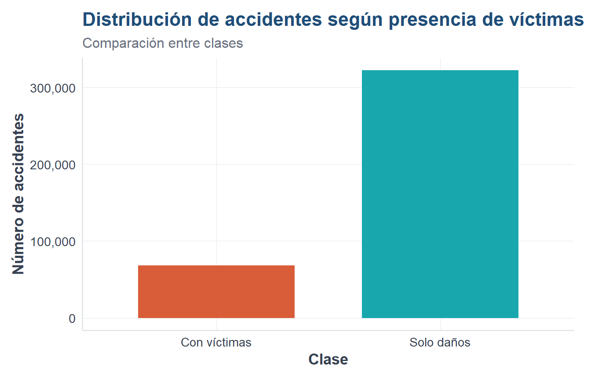
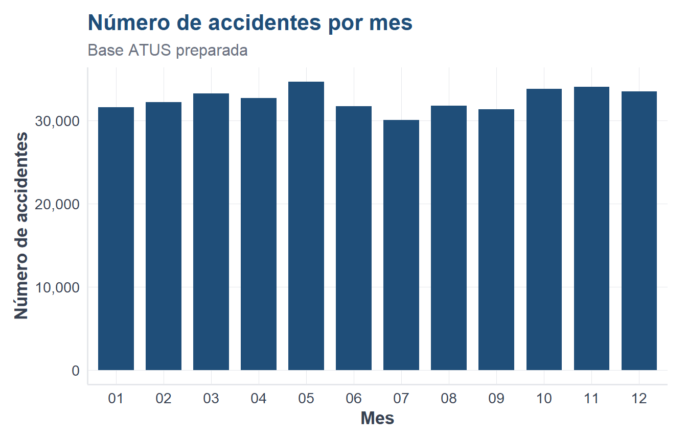
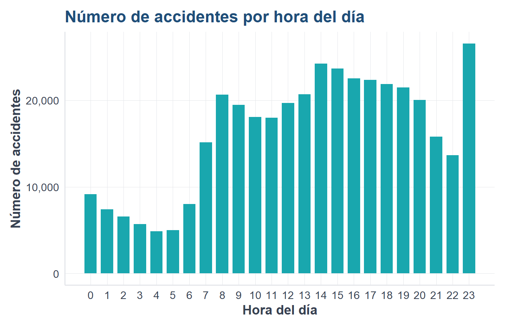
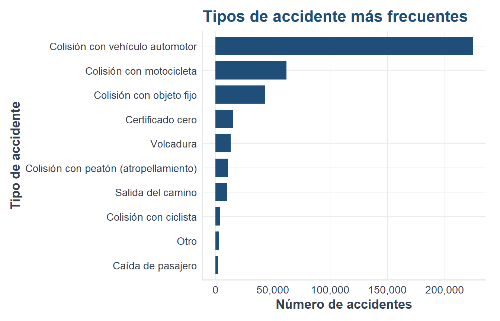
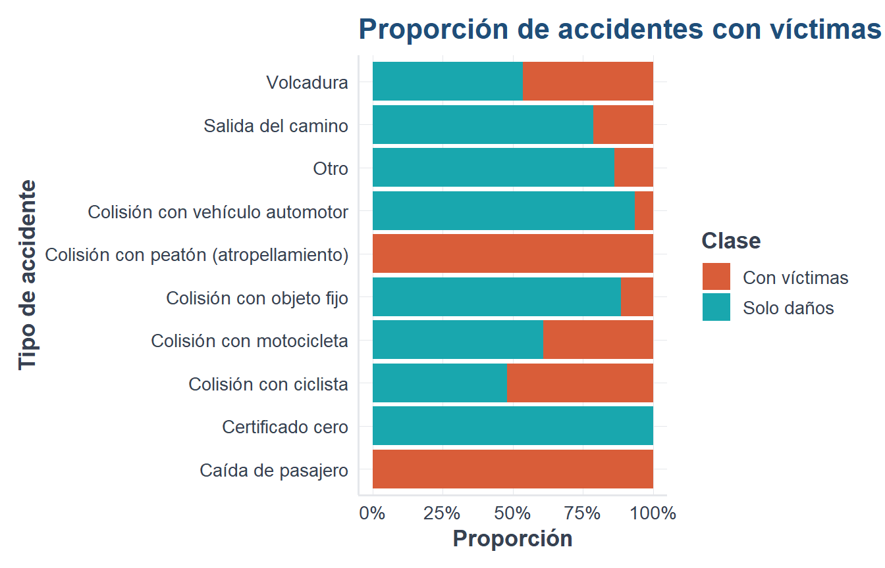

Al finalizar este capítulo, el lector será capaz de cargar una base preparada, revisar su estructura, calcular frecuencias, construir gráficas e interpretar patrones iniciales.
3.2 Cargar paquetes y base
library(readr)
Warning: package 'readr' was built under R version 4.5.3
library(dplyr)
Warning: package 'dplyr' was built under R version 4.5.3
Adjuntando el paquete: 'dplyr'
The following objects are masked from 'package:stats':
filter, lag
The following objects are masked from 'package:base':
intersect, setdiff, setequal, union
library(ggplot2)
Warning: package 'ggplot2' was built under R version 4.5.3
source("util_graficas.R")
Adjuntando el paquete: 'scales'
The following object is masked from 'package:readr':
col_factor
ruta_atus_ml <-"datos/atus_ml_preparado.csv"if (file.exists(ruta_atus_ml)) { atus_ml <-read_csv(ruta_atus_ml, show_col_types =FALSE)print("Base preparada cargada correctamente.")} else { atus_ml <-NULLprint("No se encontró el archivo datos/atus_ml_preparado.csv. Ejecuta primero el capítulo 2.")}
[1] "Base preparada cargada correctamente."
NotaExplicación del código
Se carga la base preparada en el capítulo anterior. Esto permite empezar directamente con el análisis exploratorio.
Se crean variables numéricas y factores ordenados para facilitar tablas y gráficas.
3.4 Distribución de la variable respuesta
if (!is.null(atus_ml)) { tabla_clase <-table(atus_ml$accidente_con_victimas)round(100*prop.table(tabla_clase), 2)}
Con víctimas Solo daños
17.44 82.56
if (!is.null(atus_ml)) {ggplot(atus_ml, aes(x = accidente_con_victimas, fill = accidente_con_victimas)) +geom_bar(width =0.7) +escala_clases_fill() +scale_y_continuous(labels = etiqueta_numero) +labs(title ="Distribución de accidentes según presencia de víctimas",subtitle ="Comparación entre clases",x ="Clase",y ="Número de accidentes",fill ="Clase" ) +tema_libro() +theme(legend.position ="none")}

TipInterpretación del resultado
La base está desbalanceada: hay más accidentes de solo daños que accidentes con víctimas. Esto será importante al evaluar modelos.
3.5 Accidentes por mes
if (!is.null(atus_ml)) { accidentes_mes <- atus_ml |>count(MES_FACTOR, name ="n") |>arrange(MES_FACTOR) accidentes_mes}
if (exists("accidentes_mes")) {ggplot(accidentes_mes, aes(x = MES_FACTOR, y = n)) +geom_col(fill = col_azul, width =0.75) +scale_y_continuous(labels = etiqueta_numero) +labs(title ="Número de accidentes por mes",subtitle ="Base ATUS preparada",x ="Mes",y ="Número de accidentes" ) +tema_libro()}

NotaExplicación del código
Se cuentan los accidentes por mes y se visualizan con barras. El eje vertical usa separadores de miles para facilitar la lectura.
3.6 Accidentes por hora del día
if (!is.null(atus_ml)) { accidentes_hora <- atus_ml |>count(ID_HORA_NUM, name ="n") |>arrange(ID_HORA_NUM)ggplot(accidentes_hora, aes(x = ID_HORA_NUM, y = n)) +geom_col(fill = col_turquesa, width =0.75) +scale_x_continuous(breaks =0:23) +scale_y_continuous(labels = etiqueta_numero) +labs(title ="Número de accidentes por hora del día",x ="Hora del día",y ="Número de accidentes" ) +tema_libro()}

TipInterpretación del resultado
La gráfica permite detectar horas con mayor concentración de accidentes.
3.7 Tipos de accidente más frecuentes
if (!is.null(atus_ml)) { accidentes_tipo_top <- atus_ml |>count(TIPACCID, name ="n") |>slice_max(n, n =10)ggplot(accidentes_tipo_top, aes(x =reorder(TIPACCID, n), y = n)) +geom_col(fill = col_azul, width =0.75) +coord_flip() +scale_y_continuous(labels = etiqueta_numero) +labs(title ="Tipos de accidente más frecuentes",x ="Tipo de accidente",y ="Número de accidentes" ) +tema_libro()}

NotaExplicación del código
Se seleccionan los diez tipos de accidente con mayor frecuencia para evitar una gráfica saturada.
3.8 Proporción por tipo de accidente
if (!is.null(atus_ml)) { tipos_top <- atus_ml |>count(TIPACCID) |>slice_max(n, n =10) |>pull(TIPACCID) atus_tipo_top <- atus_ml |>filter(TIPACCID %in% tipos_top)ggplot(atus_tipo_top, aes(x = TIPACCID, fill = accidente_con_victimas)) +geom_bar(position ="fill") +coord_flip() +escala_clases_fill() +scale_y_continuous(labels = etiqueta_porcentaje) +labs(title ="Proporción de accidentes con víctimas según tipo de accidente",x ="Tipo de accidente",y ="Proporción",fill ="Clase" ) +tema_libro()}

TipInterpretación del resultado
Esta gráfica compara proporciones, no cantidades absolutas. Permite identificar tipos de accidente con mayor presencia relativa de víctimas.
3.9 Conclusión
El análisis exploratorio permite detectar patrones iniciales, revisar el desbalance de clases e identificar variables útiles para modelar.